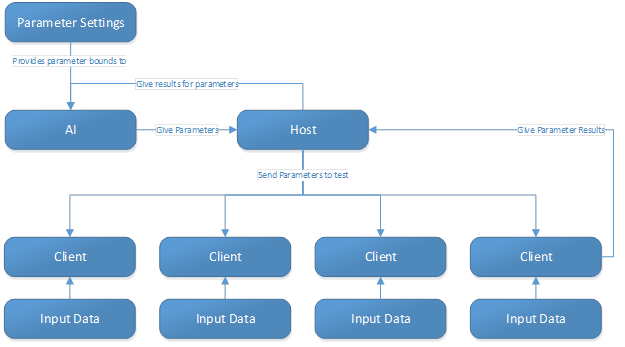
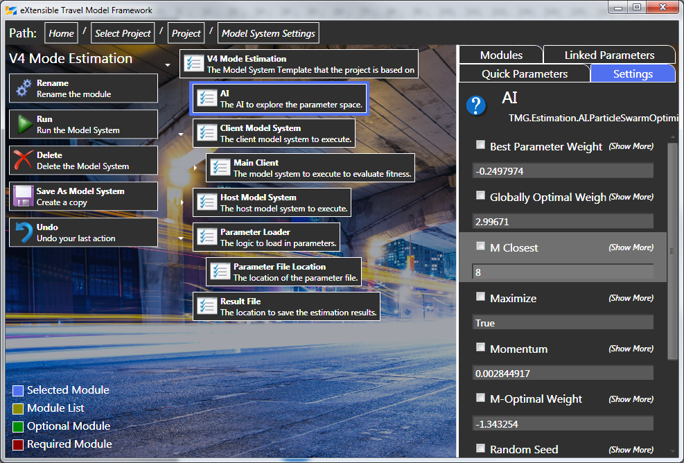

XTMF
Overview
The eXtensible Travel Modelling Framework (XTMF) is an open-source (GPLv3) software platform developed by the University of Toronto to build model systems through the composition and configuration of different modules. This means that all modules used to construct GTAModel V4.0 have their code available for inspection or recompilation. With the GPLv3 license, all plug-ins developed for XTMF must also be licensed under a GPLv3 compatible license if released to any external body. As such all of the code for GTAModel V4.0 is also open sourced via the GPLv3 license.
V4.0 Develoment
GTAModel V4.0 is designed in the eXtensible Travel Modelling Framework also developed by the TMG at the University of Toronto. XTMF provides a generalized inverse of control and factory pattern that helps enable rapid prototyping of models. In addition it also contains software to estimate models which works for probit models, one of which is the mode choice algorithm for version 4. The primary advantage of using XTMF for estimation is that the model’s estimation code is the same as the model’s final code, which helps reduce the chance of having an error moving between the two. XTMF is also designed to provide easy access to distributed computation. This allows us to estimate models across clusters improving our ability to test different parameter combinations quickly.
TMG Estimation Framework
The TMG Estimation Framework is built upon XTMF’s networking core. This allows us to quickly develop communication protocols between our host and the connecting remote clients. The diagram below gives a high level overview of the framework.

Parameter Settings
The estimation framework takes a list of parameters to estimate through a parameter file. The basic parameter file module will expect its input via an XML document with the following format.
<Root>
<Parameter Minimum="-0.25" Maximum="-0.001">
<Parameter ParameterPath="Auto Drive.ProfessionalTravelCostFactor" />
<Parameter ParameterPath="Shared Modes.Passenger.ProfessionalTravelCostFactor" />
<Parameter ParameterPath="Other Modes.Carpool.ProfessionalTravelCostFactor" />
</Parameter>
<Parameter ParameterPath="Other Modes.Bicycle.TravelTimeFactor" Minimum="-0.4" Maximum="0" />
</Root>
To begin with everything is contained within a Root tag. There are two types of Parameter tags, the first allows us to bind together different variables, and the second is for just a single variable. The ParameterPath attribute is used for linking the parameter to the model. For example "Other Modes.Bicycle.TravelTimeFactor" would first look at the “Other Modes” list inside of V4 and find the Bicycle module. Inside of Bicycle it would then search for the “TravelTimeFactor” parameter and bind to it. In this way we are able to bind to any parameter inside of the model system regardless of what type of model system we are trying to estimate.
Host
In the TMG Estimation process we have two different types of nodes. The first type is the host. There is only one host for the estimation. Its job is to schedule the exploration of the parameters that the AI has selected to explore. In addition a host is allowed to have its own model system. This allows you to setup additional data channels to interact with clients. For V4.0 mode choice estimation we have a model system that builds an encrypted in memory copy of the estimation households, persons and trips that we will use on the clients. Once the client has started it will request the household data through this channel so the sensitive data does not need to live somewhere accessible to the client nodes. Currently the host node must be run through XTMF.GUI.exe. In a cluster this should be run on the head-node.
Client
The clients for the model system estimation are purposed to be used for the heavy computation of the estimation. In a cluster this should be run on the compute-node. Currently a client is run through the command prompt with “XTMF.RemoteClient.exe [Host’s Address] [Port Number] [XTMF Configuration File]”. By default the port number is 1447 and at the moment is not configurable by the host. The configuration file is optional. When setting up an estimation it is important to have the input data for the model accessible. Typically the model system’s input directory is given by a relative path. By default XTMF on Windows will set its input directory relative to the current user’s “Documents/XTMF/Projects/Remote/RunName” folder. If that folder does not exist it will be created automatically. In most model systems built by TMG our input directory will target the Projects folder for where the input directory would be located. For V4.0 it is called V4Input.
Estimation Model System Composition
The TMG Estimation framework takes advantage of XTMF’s module composition in order to construct both the Host model system and the Client model system simultaneously. As seen below an estimation model system is composed of the TMG Estimation Host model system template containing an AI for the estimation, a client side model system, a host side model system, a loader for parameters, and a location to save the results of the estimation to.

Estimation Results/Output
The output of the TMG Estimation is a csv file in the following format. The first column is the generation the parameter set came from. This directly corresponds to what iteration the algorithm is from. The first generation is generation 0. The next column is the result of the fitness function for the parameter set. The remainder of the columns will be the values used for each parameter. All parameters will be written to file with the same name as the ParameterPath attribute from the parameter file. The CSV file contains a header to documenting all of the columns. During estimation if you open the result file in Microsoft Excel, you end up blocking the algorithm from continuing to write to the file. This will not crash the estimation however, all parameters must be written to file before the next generation can start. If you wish to look at the results, you can make a copy of the file quickly and open the copy of the file for analysis.
Optimization Algorithms
TMG’ Estimation Framework contains many different learning algorithms, in the end though most models were done with TMG’s PSO algorithm which is explained below.
The first thing you will need to understand is what we mean by parameter space. Imagine a 2D parameter space as a square. Take the first parameter and make its minimum value equal the bottom left corning and its maximum value the bottom right corner. Then do this again for the second parameter using the top corners. Since this is a square the parameter spaces can be replaced by 0 for the minimum value, and 1 for the maximum value for both of the parameters. This is how the TMG’s Estimation Framework built in AI’s work (with an exception of the GA which has a flag to turn this on). This means that the parameter space is an N-Dimensional hyper-cube with each dimension being defined between 0 and 1. When talking about a point in parameter space, we usually refer to the result of its fitness function of which we are either trying to find the maximum or minimum of in parameter space.
Gradient Descent (GD) is an optimization algorithm that starts at a point in parameter space and then computes the gradient of the fitness functions in each dimension. The kernel is the base point for the algorithm, and moves it with each iteration. Derivatives are computed computationally by evaluating each dimension twice by decreasing and increasing the parameter by the ‘whisker size’. We take this gradient, multiply it by the ‘Error Factor’ and then move towards the more optimal slope by that amount. Since we are testing each dimension twice to build the gradient and testing the kernel position each iteration of the algorithm uses 2 Dimesnsions+1 evaluations. As parameter sets gets larger the run time for this algorithm increases linearly. Gradient Descent is also known to have problems optimizing parameter spaces that are extremely volatile (where the second derivative of the fitness function on the parameter space is not smooth). Such spaces are known to have many local maximums/minimums that can trap the algorithm.
Particle Swarm Optimization (PSO) is a general purpose iterative optimization algorithm. The PSO works by initially picking points in parameter space and momentum vectors randomly. Each of these points is referred to as a particle, which will maintain a history of the best point in parameter space that it has explored. For each iteration the parameters moved a combination of their momentum, a draw to the globally optimal point, and a repulsion from their best observed point. Current research shows that PSO is typically produces results at least as good as traditional genetic algorithms with far less tests making it run much faster. One of the advantages PSO has over GD is that it is very good at avoiding being caught by a local maximum/minimum. PSO also does not increase in runtime with an increase of parameter size.